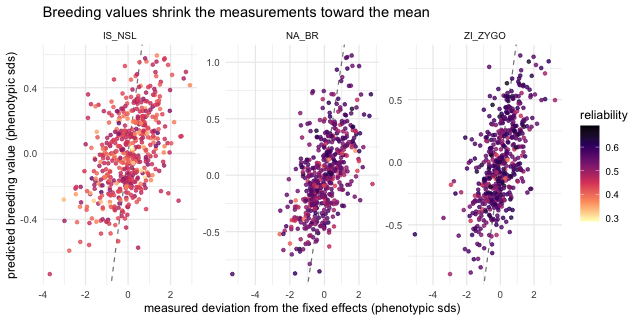

An animal model answers “how much of the variation in this trait is
additive” and gives the covariance G. It does not answer
“what is the additive value of this opossum”, because the
breeding values are integrated out of the likelihood: that is what makes
the model scale to many individuals and many traits.
breeding_values() puts them back afterwards, from the
G, E and beta the fit already
estimated. What comes out is what a breeding program would act on: a
predicted additive value per individual, with the reliability of that
prediction.
Fit
Three distances that span the skull and are not dominated by a single axis.
traits <- c("IS_NSL", "NA_BR", "ZI_ZYGO")
dat <- opossum[complete.cases(opossum[, c("id", "sex", "age", traits)]), ]
dat[traits] <- log(dat[traits])
design <- suppressWarnings(
animal_design(cbind(IS_NSL, NA_BR, ZI_ZYGO) ~ sex + age, dat))
A <- opossum_grm[rownames(design$Y), rownames(design$Y)]
fit <- lmm_animal(design$Y, design$X, A, lkj_prior = 2,
iter = 800, warmup = 400, chains = 2,
refresh = 0, seed = 1)
#> Running MCMC with 2 parallel chains...
#> Chain 2 finished in 3.4 seconds.
#> Chain 1 finished in 3.6 seconds.
#>
#> Both chains finished successfully.
#> Mean chain execution time: 3.5 seconds.
#> Total execution time: 3.8 seconds.The breeding values
The prediction is the conditional mean of the additive values given
the data, evaluated at the posterior means of G,
E and beta. That is empirical Bayes: the
standard errors are conditional on those values and do not carry the
uncertainty in the covariance parameters.
ebv <- breeding_values(fit)
ebv
#> <stanimal_breeding_values> 505 individual(s), 3 trait(s), empirical Bayes
#> G, E and beta at their posterior means; reliability is 1 - Var(u | observed y) / (A_nn G_kk)
#> individual trait value se reliability
#> K1396 IS_NSL 0.000 0.019 0.374
#> K1397 IS_NSL -0.027 0.021 0.375
#> K1408 IS_NSL 0.023 0.019 0.518
#> K1409 IS_NSL -0.016 0.021 0.521
#> K1396 NA_BR 0.010 0.025 0.473
#> K1397 NA_BR 0.043 0.028 0.471
#> K1408 NA_BR 0.046 0.024 0.612
#> K1409 NA_BR 0.056 0.027 0.615
#> K1396 ZI_ZYGO 0.001 0.018 0.500
#> K1397 ZI_ZYGO -0.018 0.020 0.497
#> K1408 ZI_ZYGO -0.002 0.017 0.635
#> K1409 ZI_ZYGO -0.013 0.020 0.639The reliability is the share of a trait’s additive variance the prediction pins down. An animal with many measured relatives scores higher than a lone one.
round(apply(ebv$reliability, 2, stats::quantile, c(0.05, 0.5, 0.95)), 2)
#> IS_NSL NA_BR ZI_ZYGO
#> 5% 0.36 0.45 0.48
#> 50% 0.44 0.54 0.57
#> 95% 0.51 0.60 0.63The values are on the trait’s scale, as deviations from the fixed effects, so they can be compared with each animal’s own deviation:
Ranking candidates
Ranking by breeding value and ranking by measurement do not give the same list.
first <- traits[1]
by_value <- rownames(ebv$values)[order(ebv$values[, first], decreasing = TRUE)]
by_phenotype <- rownames(residual)[order(residual[, first], decreasing = TRUE)]
data.frame(id = by_value[1:10],
value = round(ebv$values[by_value[1:10], first], 3),
se = round(ebv$se[by_value[1:10], first], 3),
reliability = round(ebv$reliability[by_value[1:10], first], 3))
#> id value se reliability
#> L4741 L4741 0.048 0.021 0.372
#> L4267 L4267 0.046 0.021 0.490
#> L6358 L6358 0.046 0.021 0.442
#> L3715 L3715 0.046 0.020 0.449
#> L3777 L3777 0.045 0.020 0.396
#> L4095 L4095 0.045 0.021 0.472
#> L5470 L5470 0.044 0.019 0.424
#> L5720 L5720 0.043 0.019 0.466
#> L4089 L4089 0.043 0.020 0.430
#> L7487 L7487 0.042 0.021 0.434
length(intersect(by_value[1:10], by_phenotype[1:10]))
#> [1] 0Here 0 of the top ten by breeding value are also in the top ten by their own measurement. With reliabilities around one half, an animal’s relatives and its other traits weigh as much in the prediction as its own record.
Shrinkage
Every prediction sits closer to the mean than the animal’s own deviation, and the points furthest inside the line are the ones with the lowest reliability. Both axes are in phenotypic standard deviations, since each log distance has its own scale.
sd_P <- sqrt(diag(draws_mean(fit, "P")))
plot_dat <- data.frame(
trait = factor(rep(traits, each = nrow(residual)), levels = traits),
measured = as.numeric(sweep(residual, 2, sd_P, "/")),
predicted = as.numeric(sweep(ebv$values, 2, sd_P, "/")),
reliability = as.numeric(ebv$reliability))
ggplot(plot_dat, aes(x = measured, y = predicted, colour = reliability)) +
geom_abline(slope = 1, intercept = 0, linetype = "dashed", colour = "grey50") +
geom_point(size = 1.2, alpha = 0.8) +
scale_colour_viridis_c(option = "magma", direction = -1) +
facet_wrap(~trait, scales = "free") +
labs(x = "measured deviation from the fixed effects (phenotypic sds)",
y = "predicted breeding value (phenotypic sds)",
title = "Breeding values shrink the measurements toward the mean") +
theme_minimal()
plot of chunk shrinkage